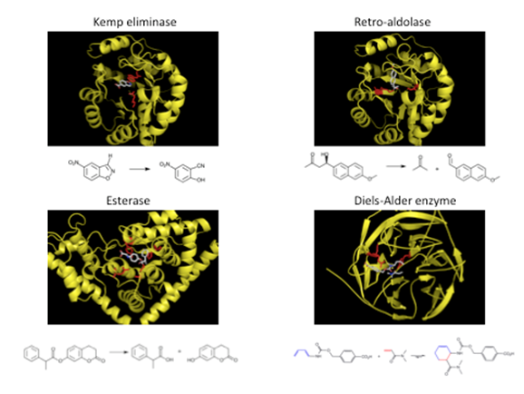

From prediction of structure to design of function
The primary goals of the research in the Baker group over the past several years have been to predict the structures of naturally occurring biomolecules and interactions and to design new molecules with new and useful functions. These prediction and design challenges have direct relevance for biomedicine and provide stringent and objective tests of our understanding of the fundamental underpinnings of molecular biology.
Read More
Several years ago, we developed a general computational strategy for designing new protein structures that incorporates full backbone flexibility into rotamer-based sequence optimization. This was accomplished by integrating ab initio protein structure prediction, atomic-level energy refinement, and sequence design in Rosetta. The procedure was used to design Top7, a 93-residue protein with a novel sequence and topology. Top7 was found to be folded and highly stable, and the x-ray crystal structure of Top7 is virtually identical to the design model (Kuhlman et al, 2003).
Read More
In the past several years, we have extended the Rosetta protein design methodology to protein-RNA and protein-DNA interfaces and shown that new, highly specific endonucleases can be created by redesign of the extended DNA-binding interface in homing endonucleases (Havranek et al, 2004; Ashworth et al, 2006). We are continuing to improve this methodology and designing new endonucleases that cleave within therapeutically important sites. For gene therapy applications, for example, we are designing endonucleases that cleave near the sites of mutations that cause disease; our collaborators will then experiment with correcting mutations in these genes through homologous recombination by introducing the designed endonuclease and a wild-type copy of the gene into mutant cells. Thus far, we have successfully designed endonucleases with a range of cleavage specificities, and are getting close to the goal of producing enzymes which specifically cleave physiological target sites to go into gene therapy trials (Ashworth et al, 2006; Thyme et al, 2009).
Tradeoff between experiment and computation
Read More
We will continue to work to improve the physical model and the sampling methodology underlying the prediction and design calculations in Rosetta. On the structure calculation side, we will strive for consistent near-atomic resolution ab initio structure prediction for small proteins, and work towards atomic level structure determination for proteins greater than 200 amino acids using limited experimental data such as backbone only NMR data and 5-7Å electron density data. We will focus in particular on membrane proteins and other systems for which obtaining high resolution experimental data is difficult—this is where our approach are likely to contribute the most. We will also extend data guided structure determination to biological assemblies where SAXS, crosslinking and other types of data often can be collected. On the design side, we will extend our methodology to non natural amino acids and cofactors to try to leapfrog over the limitations nature has faced with the limited set of twenty amino acids. We are aiming to design a complete pathway for fuel production from CO2 using solar generated reducing equivalents. We will also develop and test methods for designing high affinity binders/inhibitors for any specified surface patch on a protein of known structure. More generally, we hope to develop new biomolecules with new functions—inhibitors, enzymes, endonucleases, and vaccines—that can have a positive impact on the world.

Figure 1. Examples of design models for experimentally validated de novo designed enzymes. The chemical reactions catalyzed by the designed enzymes are indicated below the structure schematics in the black panels.